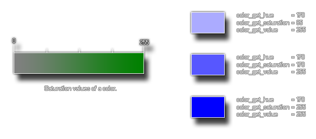

color_get_saturation
Returns the saturation of the color given.
Syntax:
color_get_saturation(col);
| Argument | Description |
|---|---|
| col | The color to check |
Returns : Real
Description
This function will return the saturation of the given color. This is the amount of the color tone that is mixed into the final color and is part of the hue, saturation and value (luminosity) method for defining a color. The following image illustrates how this value corresponds to the HSV scale of color: 
Example :
col = make_color_hsv(random(255), color_get_sat(c_teal), 255);
The above code gets the saturation used to make the color constant "c_teal" and then uses that value to set a random color to have the same saturation, storing the resulting color in the variable "col".
Back : Color And Blending
Next : color_get_value